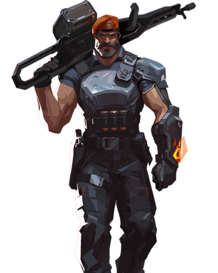
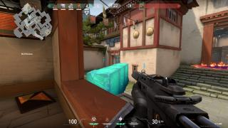
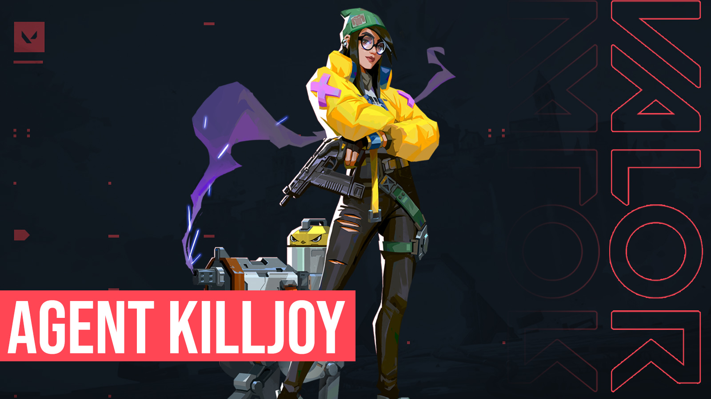

How to Play Brimstone
Brimstone is one of the controller agents in Valorant. His abilities include smokes, an incendiary, and stim beacons. The smokes are primarily used for blocking off lines of sights for enemies, while the incendiary can be used to cause damage or block off certain points. The stim beacons provide a boost in firing rate for anyone on your team within the radius. His ultimate is similar to his smokes; it covers a larger radius and does damage to anyone inside of it. (continued pg. 12)
|
Aim and Crosshair Placement
BAM! As soon as you turn your back, you're instantly shot. You turn to shoot back but you end up missing all of your shots and die to the other player. Aim is one of the most important parts of Valorant since shooting matches are so fast-paced. Once a player is able to land the first headshot, the other has low chances of making it out. There are many ways to train aim and set up better situations for yourself to aim better.
First off, aim at head level. Headshots are deadly in this game, and with most shoot-outs lasting mere seconds, the ability to land headshots is important. They can take a huge chunk of health away from your opponents and leave them low enough so that they don't have any shield left. By setting yourself up to hit headshots, you'll be ready when an enemy lines up in your crosshair.
Next up, fix your crosshair settings. |

Your crosshair is crucial to aim, since it tells you exactly where you are pointing at. If your crosshair is distracting enough, it can make you lose gun fights. It should be small enough that you can see the enemies when you point at them, but not so small that you can't see it at all when you look at something. You can fiddle with the opacity, length, and thickness of the crosshair to find something that works for you. In addition, you can change the color to have it contrast against the background of the maps and know exactly what you're pointing at.
Another big part of aim is your sensitivty and mouse DPI. If your sensitivty or DPI is too high, then it will be hard to control your movements and flicks. |
Many pro players play with a high DPI and low sensitivty, or a low DPI and high sensitivty. You can find the right balance of these two by calculating your eDPI, which is your DPI multiplied by your sensitivity. Most pro players play with an eDPI between 200 and 400, which means they have greater control over their movements. It is important to find a DPI and sensitivty that work for you and your playstyle, rather than just copying a pro's settings.
Aim is a skill that can be trained, so it's important to stick to a good routine everyday. Valorant has a built in range feature where you can practice shooting at bots. You can practice flicking by setting the bots to easy, medium, or hard. You can also practice shooting at strafing or stationary bots as they spawn all over the practice range. There's also a dedicated spot to track the spray of your guns and perfect controlling the spray. It's important to practice using all of these features and fine-tune your sensitivity to make your aim the best it can be. |
|
Leaked Agent: Killjoy
A recent datamine confirmed the rumors of a new agent. Dataminers found files for an agent name "Killjoy," whose abilities include turrets and a silent bomb. Players felt unsure about the new agent, stating that her abilities were too overpowered and combat based. Riot developers confirmed the leaks on Reddit, and released an official trailer for Killjoy days later. Players also notice easter eggs on the map Split teasing the new agent. (continued pg. 5)

|
|
Sage Meta?
Right now, Sage is considered a powerful agent for her ability to heal and revive her teammates, something no other agents can do. She is a popular pick and many players would say they need a Sage on their team. However, pro teams have proven that Sage may not be that essential. With the combination of agents that can heal themselves and agents that can hold sites by themselves well, a team strategy that is a little more cautious can be advantageous. Valorant already contains many agents that can heal themselves, like Phoenix and Reyna, and the abilities in Cypher's and Brimstone's kits can delay pushes. (continued pg. 8)
|